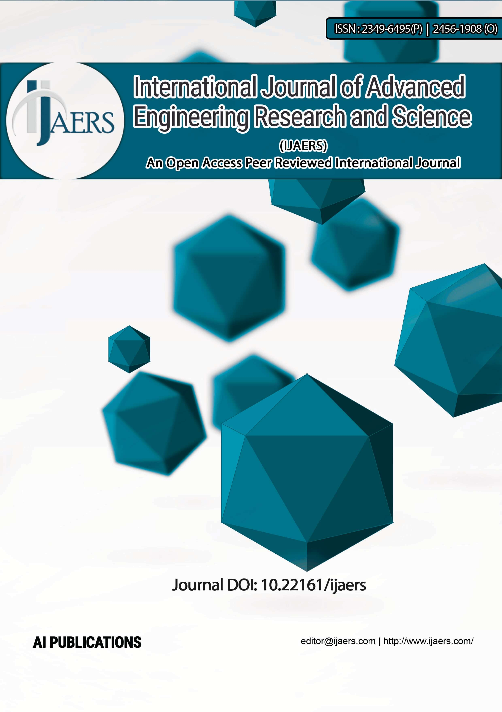

International Journal of 
advance Engineering Research and Science
- FOR AUTHORS
- Research Grant Guidelines
- Instruction to Author
- Open Access Policy
- Review Guidelines
- Plagiarism Poilicy
- How to Publish Paper
- Confrence
- FAQ
- Submit Manuscript Online
- ARTICLES & INDEXING
- Current Issue
- Archive
- Special Issue
- DOWNLOADS
- Paper Formate
- Certificate
- STATISTICS

from @ijaers
-
Nothing
to see
here-
yetWhen they Tweet, their Tweets will show up here.
Research Grant upto 7500 USD Annually
Approved by the Ministry of Education
CrossRef DOI: 10.22161/ijaers
CNKI (China Academic Journals)
Languages: English, Portuguese and Spanish
Qualis-CAPES (2013-16)-A2 Brazil Link;Impact Factor: 4.912;SJIF 5.986
{kind=link}
Google Scholar; Redalyc-bibliographic database
Indexing and Archeiving of the Journals
Scopus Indexing-Under Review
Refereed/ Peer Reviewed Journal
Scope of the Journal:
All Engineering and Technology with related subfields, Nanotechnology and Material Research, Deep learning, Machine learning, Artificial intelligence, artificial neural network, Deep neural networks, Convolutional neural networks, Voice recognition, Sound recognition, Speech recognition, Pattern recognition, Image recognition, Facial recognition, Text mining, Text analytics, Robots / robotics, Domain specific chips, Chip (e.g.:volta), Hardware, Iot / Internet of things, Categorization, Taxonomies, Classification, Big data, Parse data, Prediction, Data representation, Data privacy / security / safety issues, algorithm and coding issues, Crowdsourcing, Supervised learning from labeled data, Behavioral-based authentication, Entrepreneurship, Computer science, Covid-19 study, Health Research, Nursing, Medical, Drugs, Bioscience, Pharmaceutical Sciences, Nutrition and Food Science, Social Science, Humanities, Physics, Chemistry, Mathematics, Religious studies, Cultural Study, Gender and Population study, Historical study, Psychology, Political Science, Philosophy, Education development, Engish Literature, Language, Teaching and Learning, Robotics and Automation, Management, Accounting, Economics, Marketing, Human Resources, Hotel and Tourism, Business ethics, International Relations, Public Administration, Law, Media, Journalism and mass communication, Astrophysics, Agriculture, Horticulture, Rural Development, Sustainable development, Environmental study, Earth and Atmospheric Sciences, Water management, Forestry, Fisheries research and Food research.

International Journal of Advanced Engineering Research and Science (IJAERS) is the open-access peer-reviewed
journal with a certain plagiarism policy and the journal strives to return reviewers’ comments to authors
within 10 days from the submission. It has a high citation record and high impact factor from the reputed
society and DOI (Digital Object Identifier) (10.22161/ijaers) from CrossRef. IJAERS provides hardcopy and
softcopy of the certificates and Journal complete edition with cover page, editorial board and table of
content.
The organization aims at undertaking, coordinating and promoting research and development. It provides
professional and academic guidance in the field of basic education, Higher Education as well in Technical
Education. International Journal of Advanced Engineering Research and Science's mission is to Promote and
support, High-Quality basic, Scientific Research, and development in the field of Engineering Technology,
Sciences, Generate Public awareness, provide advice to scholar's researchers and communicate research
outcomes.
- Publication Frequency : Monthly
- DOI : 10.22161/ijaers
- Year of Commencement: 2014
- Publisher: AI Publications
- Submit Manuscript : editor@ijaers.com/ editor.ijaers@gmail.com
Popular Indexing and Abstracting of Journal Google Scholar , Academia , WorldCat, Qualis (interdisciplinary area with A2 Grade) , scinapse, SlideShare, Pol-Index, PBN-Polish Scientific Bibliography, Microsoft Academic Search, The university Library-Aalborg University (Denmark), Tyndale University College & Seminary , Indiana University , J-Gate , Index Copernicus, Internet Archive, JournalTOC (UK), ResearchBib, Bibsonomy, CiteSeer, DRJI, Thomson Reuters ResearcherID (Author Profile), Root Indexing, Infobase Index, PdfSR, Cite Factor, ISSUU, Reddit, Scribed , Redalyc (Author Profile), Jurn-Academic Articles, Chapters and Theses, etc.....
Click here for Topics of Interest- HIGHLIGHTS
- Call for Papers
- NAAS Score: 3.18
- Pol-Index
- CrossRef DOI:10.22161/ijaers
- DOWNLOADS
- Paper Formate
- Certificate
Licence

This work is licensed under a Creative Commons Attribution 4.0
International License.
Social Connect
Facebook Page
Link